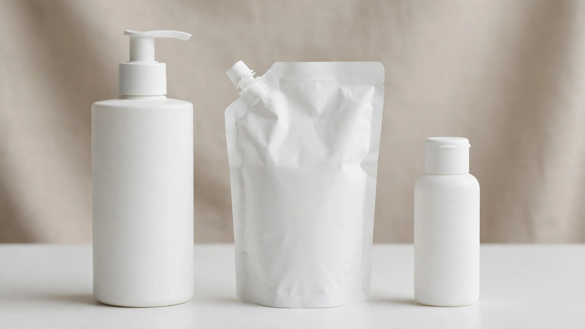
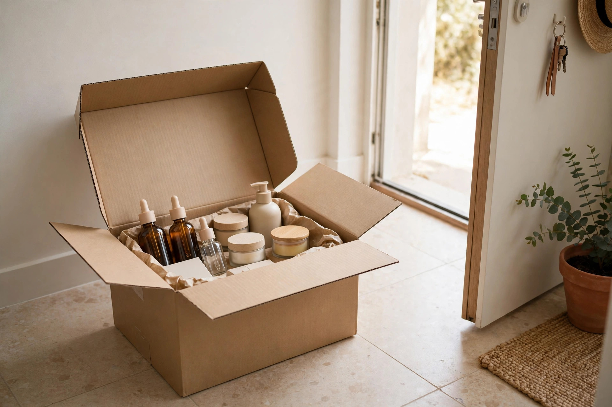

記事一覧
カテゴリ別に並べています。キーワードで絞り込むこともできます。
公開日：2026年11月9日｜最終更新日：2026年11月9日｜情報確認日：各記事に記載（いずれも2026年11月9日確認）
単価の計算

検証計算 化粧水・乳液の「1mLあたり単価」の出し方 — 本体・詰め替え・大容量を同じ土俵で比べる 単価＝税込価格÷内容量の定義と容量表記の読み方を整理し、無印良品の公式価格（本体・詰め替え・携帯用）で実際に計算します。 検証計算｜2026年11月9日定期購入の条件
 条件確認
定期購入コスメの総額比較の読み方 — 「初回○円」ではなく最低継続回数までの総額で比べる
特定商取引法の表記と最終確認画面で読むべき5項目と、総額の計算式、解約条件の確認箇所を整理します。
条件確認｜2026年11月9日
条件確認
ULU定期の申し込み前に確認する条件 — 価格・回数・解約の表示の読み方
効能の説明はせず、初回と2回目以降の価格の区別、最低継続回数の有無、解約の条件、単価の出し方だけを整理します。
条件確認｜2026年11月13日
条件確認
定期購入コスメの総額比較の読み方 — 「初回○円」ではなく最低継続回数までの総額で比べる
特定商取引法の表記と最終確認画面で読むべき5項目と、総額の計算式、解約条件の確認箇所を整理します。
条件確認｜2026年11月9日
条件確認
ULU定期の申し込み前に確認する条件 — 価格・回数・解約の表示の読み方
効能の説明はせず、初回と2回目以降の価格の区別、最低継続回数の有無、解約の条件、単価の出し方だけを整理します。
条件確認｜2026年11月13日
 条件確認
ULUは初回も2回目も同じ3,960円 — 価格の仕組みと総額・1mL単価の読み方
初回と2回目以降が同額の価格設計を、総額の式（3,960円×回数）と1mL単価36円で読み解きます。解約の締切（10日前まで）も確認します。
条件確認｜2026年11月16日
条件確認
ULUは初回も2回目も同じ3,960円 — 価格の仕組みと総額・1mL単価の読み方
初回と2回目以降が同額の価格設計を、総額の式（3,960円×回数）と1mL単価36円で読み解きます。解約の締切（10日前まで）も確認します。
条件確認｜2026年11月16日

条件確認 通信販売にクーリングオフはない — 化粧品通販の返品条件の読み方 通信販売にはクーリングオフが適用されません。返品特約の表示の読み方と、表示がない場合の受領後8日以内の扱いを整理します。 条件確認｜2026年11月14日今後の予定
次のテーマは、一次情報の確認と公開前チェックが終わり次第、順に公開します。いずれも効能の話ではなく、価格・容量・条件の検証です。
日焼け止めの単価と使用量計算（準備中）
メーカー・公的機関が案内する使用目安量から「1本で何日分か／1日あたり何円か」を計算する記事。表現は化粧品の効能56項目の範囲内に限ります。
シャンプーは「詰め替え・大容量・サロン系」のどれが得か（準備中）
分岐軸は予算と購入形態のみ。単価計算に、楽天のレビュー統計（平均・件数）を補助として併記する記事。
歯みがき粉の成分・容量・単価の横断比較（準備中）
一般化粧品の範囲に収まるものだけを対象に、公表スペックと容量単価を並べる記事。医薬部外品の効能訴求はしません。